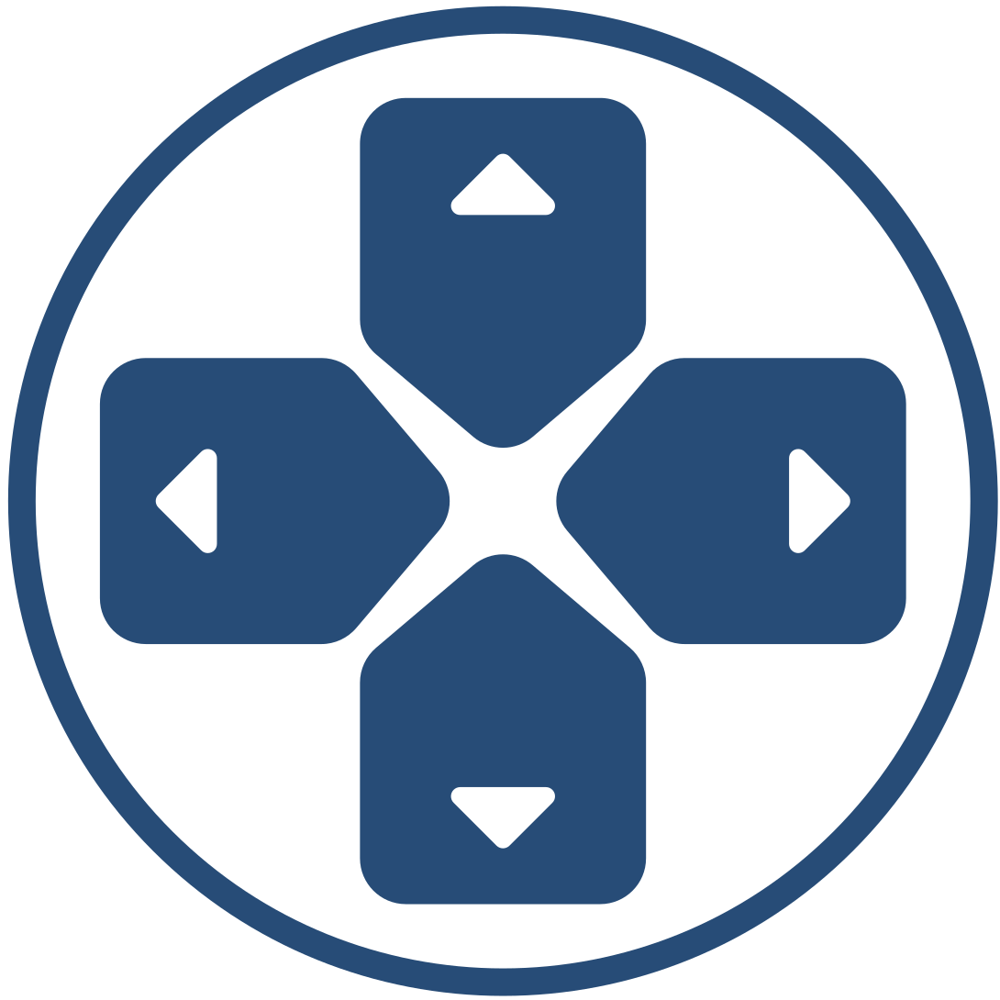

01
Architetture di calcolo
Progettazione e ottimizzazione di architetture eterogenee, riconfigurabili e ad alte prestazioni.
- FPGA & Reconfigurable Systems
- Hardware Acceleration
- Edge Computing

ARCADESUniversità degli Studi di Napoli Federico II
Architetture di calcolo avanzate, sistemi embedded affidabili e ricerca che trasforma la complessità in tecnologia concreta.
Esploriamo il punto in cui hardware, software e mondo fisico si incontrano. Costruiamo sistemi capaci di essere più veloci, più sicuri e più affidabili.
ARCADES riunisce competenze multidisciplinari del Dipartimento di Ingegneria Elettrica e delle Tecnologie dell'Informazione dell'Università Federico II di Napoli.
Dalla scala del singolo chip agli ecosistemi digitali complessi.
Progettazione e ottimizzazione di architetture eterogenee, riconfigurabili e ad alte prestazioni.
Metodi, modelli e tecnologie per sistemi resilienti a guasti, attacchi e condizioni impreviste.
Gemelli digitali, IoT e piattaforme intelligenti per osservare, comprendere e governare sistemi reali.
Infrastrutture scalabili e servizi distribuiti progettati per efficienza, continuità e fiducia.
Competenze diverse, una direzione condivisa.
Articoli, atti di conferenza, dataset e risultati dei progetti del gruppo sono disponibili nel catalogo istituzionale dell'Ateneo.
Vai al catalogo IRIS↗DIETI — Università degli Studi
di Napoli Federico II
Via Claudio 21, 80125 Napoli